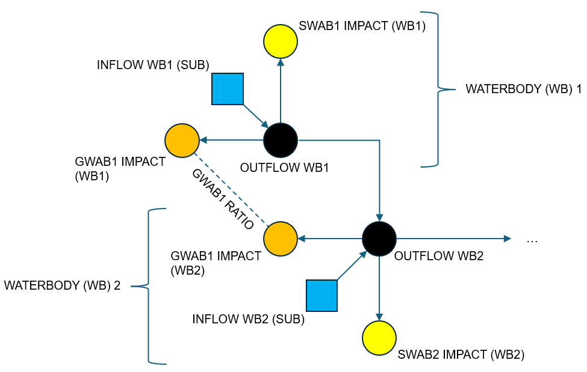

Optimiser
The Optimiser identifies potential artificial influence changes that could achieve flow targets by solving an optimisation problem. Similar to the Calculator, the starting point could be the “base” WRGIS tables or a modified/alternative version of “WRGIS-like” tables. Key outputs from this component include updated tables of how the artificial influence impacts were changed by the solver to help meet flow targets.
Conceptualisation
For the Optimiser we conceptualise waterbodies and artificial influences as nodes in a network. The network can be thought of as follows (see also the diagram below for a very simple hypothetical case):

Waterbody nodes are connected via directed edges/arcs to their downstream neighbours according to the relationships given in WRGIS.
Each waterbody node has an inflow, which represents runoff generated within the waterbody (i.e. “sub” flows). These inflows are set as natural “sub” flows unless any artificial influences are being held constant, in which case inflows are adjusted to account for these impacts upfront. See below for more details.
Aside from any held constant, each artificial influence also has a node (see below for a complication about groundwater abstractions). A directed edge connects the impacted waterbody to the relevant artificial influence.
Each artificial influence node has a target impact. For abstractions, the nodes are therefore similar to demand nodes in water resources systems modelling.
Groundwater abstractions that impact multiple waterbodies have multiple nodes, one per impacted waterbody. The target impacts for a given groundwater abstraction are held in the proportions given in WRGIS (see Data).
The problem then is to find the optimal set of flows along all of the edges, according to some objective(s) and constraints that we define. Note that (for now at least) we have one network flow problem for each combination of artificial influences scenario and flow percentile that we are interested in. This approach provides a solution for a given percentile independently of other percentiles.
Note
Functionality has been added to translate the solution for a given percentile into
a set of long-term average changes under the assumption of constant (relative)
impact profiles across the flow duration curve (FDC) or seasonally. See the
infer_mean_abstraction entry in Dataset and the notes in
Optimiser. We also note that alternative approaches could
be used to relax the assumption to a degree and that future work may seek to
optimise “across the FDC” in a more holistic manner.
Once solved, by looking at the relevant edges we can get at the following terms:
Waterbody outflows (i.e. “ups” scenario flows), for which we can then calculate surpluses/deficits and compliance classifications.
Actual artificial influence impacts. These impacts may be less than the target impacts if (i) the target impacts are not possible and/or (ii) a lower impact is identified by the solver as resulting in the optimal solution.
For the latter set of edges, we can compare the actual impacts with the target impacts to back out the required impact changes - i.e. the current key output of the Optimiser. See note above about translation to long-term average changes.
Simplifications
At this point it is worth introducing a couple of simplifications currently made in the Optimiser:
Discharges (listed in Discharges_NBB) are held constant in the solution at present, i.e. they are not adjusted by the solver either to help meet flow targets or to maintain (sometimes complicated) relationships with abstractions. Therefore, currently discharges are held constant (by adding their impact upfront to the relevant inflow terms in the waterbody network).
By default, complex impacts are also held constant in the solution (again by adjusting the relevant waterbody inflow terms upfront).
On the latter point, however, exploratory (and optional) functionality has been added to allow the inclusion of (1) increases to reservoir compensation flows (up to a user-specific maximum increase) and (2) reduction of abstractions listed as complex (typically due to the conditions that govern their operation and resulting impact across the FDC). See the Tutorial for a guide to the current complex impact functionality.
Problem Definition
The network flow conceptualisation outlined above can be formulated and solved via the linear programming family of methods. For this, we need to define “optimal” in our case and express it as an objective(s). We also need to define the conditions that must be satisfied in a solution as a set of constraints.
Objective(s)
One natural objective for this problem is to minimise the total abstraction impact reductions needed to meet flow targets. This is equivalent to maximising the total abstraction impact up to the limits imposed by the abstraction scenario. This is the the currently recommended primary objective for the Optimiser.
The Optimiser supports solution for multiple objectives via a sequential approach. For example, after solving for the primary objective, the primary objective can become a constraint and we can solve for a secondary objective.
Testing so far has largely used a (proportional) equality metric as a secondary objective. This is on the basis that it is better to distribute relative impact reductions equally amongst abstractors, rather than unequally, if possible. The nature of the problem is such that solutions for the primary objective (minimum impact reduction) can easily be non-unique, with the solver returning a potentially arbitrary choice of solution from the optimal set. There is thus a need/opportunity to nudge the solution choice to one with desired properties.
For this secondary equality objective, we seek to maximise the equality of the proportions of target abstraction impacts fulfilled at the point(-purpose) scale. We quantify equality as the mean absolute deviation from a target proportion. The target proportion is taken as the proportion of total abstraction fulfilled in the solution associated with the primary objective. The mean absolute deviation from this target is then generally lower (better) if all abstraction points have similar proportional impact fulfillment to the target proportion.
Note
For large domains including multiple catchments, the Optimiser will evaluate the target proportion (and the mean absolute deviation) for each catchment. Catchments will be identified as all waterbodies upstream of - and including - the most downstream waterbodies in the domain passed to the Optimiser.
An alternative secondary objective is available to explore how a solution may change if we try to minimise the number of individual changes made. This objective is handled via a proxy metric that uses weighting inversely proportional to impact size to promote sparsity in the solution. A proxy metric is used as minimising a count forms a potentially non-convex optimisation problem that is not handled by the disciplined convex programming package (cvxpy) that underpins the Optimiser.
Constraints
Several constraints are applied in the problem formulation, regardless of the objective being used. These constraints may be summarised as:
Edge flows must be non-negative.
Abstraction impacts must not exceed their target rates.
Waterbody outflows must be greater than or equal to their target flows. I.e. flow targets are a hard constraint.
Mass balance principles must be respected, such that the sum of inputs to and outputs from a waterbody must be equal. Inputs are inflows from upstream neighbour waterbodies that flow into the waterbody in question, as well as runoff generated within the waterbody and any discharges within the waterbody. Outputs are the waterbody outflow to its downstream neighbour and any abstractions within the waterbody. Complex impacts that act to increase or decrease flow are also accounted for in the mass balance.
Groundwater abstractions that impact multiple waterbodies must do so according to the fixed ratios given in WRGIS. For example, if a groundwater abstraction’s total impact is split between two waterbodies in a ratio 2:1 in WRGIS, this ratio must be respected in the solution.
Hands-off flow (HOF) conditions must be respected for the surface water abstractions to which they apply.
Note
If a target cannot be feasibly met, by default it will be dropped and a warning message displayed. This situation can occur if some impacts are held constant (e.g. complex impacts) that have a large effect on flows. See Optimiser for more details, including options on customising behaviour when faced with infeasible targets.
The final constraint listed above constitutes a threshold condition. If flow drops beyond some threshold then an abstraction must be switched off. If flow is above the threshold then an impact can take place up to the target rate. This transforms the problem from a pure linear programming problem into a mixed integer (binary) linear programming problem.
As noted above, if a solution is being sought for a secondary objective, the primary objective is applied a constraint on the solution. In the current setup, this means that the optimal maximum total abstraction found when solving for the primary objective is included as an additional constraint when seeking a solution for a secondary objective.
We can also observe now that the issue of “capping” discussed in Calculator is dissolved by the formulation for the Optimiser to some extent. The non-negativity constraint prevents scenario flows becoming negative, i.e. abstraction impacts on flows have to remain compatible with non-negative scenario flows.
Note
One possible (edge) case relates to groundwater abstractions impacting waterbodies with outflow targets of zero. So long as other constraints are respected (and under some assumptions about the relevant hydrogeology), it could be possible to have groundwater abstraction that exceeds the impact on flow. This may not be relevant in most cases, where flow targets will be above zero, but the handling of this case could be refined in future.
Customisation
It is possible to customise the behaviour of the Optimiser in a number of ways, including:
The starting point for the Optimiser could be the “base” WRGIS tables or a modified/alternative version of “WRGIS-like” tables. This offers the possibility to prescribe some changes and allow the Optimiser to identify others.
Flow targets can be varied from their default (EFI) on a waterbody basis.
Abstractions can be selected for inclusion or exclusion in the optimisation at the licence-point-purpose level.
Different objective choices can be tested in line with the capabilities outlined above.
Default exclusions (from optimisation) are currently in place in relation to particular types of abstractions, including for surface water abstractions with reservoir, lake or level-dependent management unit flags in WRGIS. Former licences that are now deregulated are also excluded, along with abstractions with small impacts below a (customisable) threshold. See the Dataset page for details of these defaults, all of which can be changed by a user.
Trade-Offs
If running with two or more (sequential) objectives, it is possible to explore trade-offs between objectives. This is achieved by solving for the primary objective and then “relaxing” its total abstraction impact result before applying it as a constraint on the secondary objective. This process can be done repeatedly to explore how successively larger relaxations (i.e. degrading the primary objective) affect the secondary proportional equality objective (or other secondary objectives).
The size of trade-offs may vary between contexts and applications. In some cases any trade-offs may be limited, whereas in others they may be important to consider. An example of the latter for an anonymised test catchment is shown in the plot below.